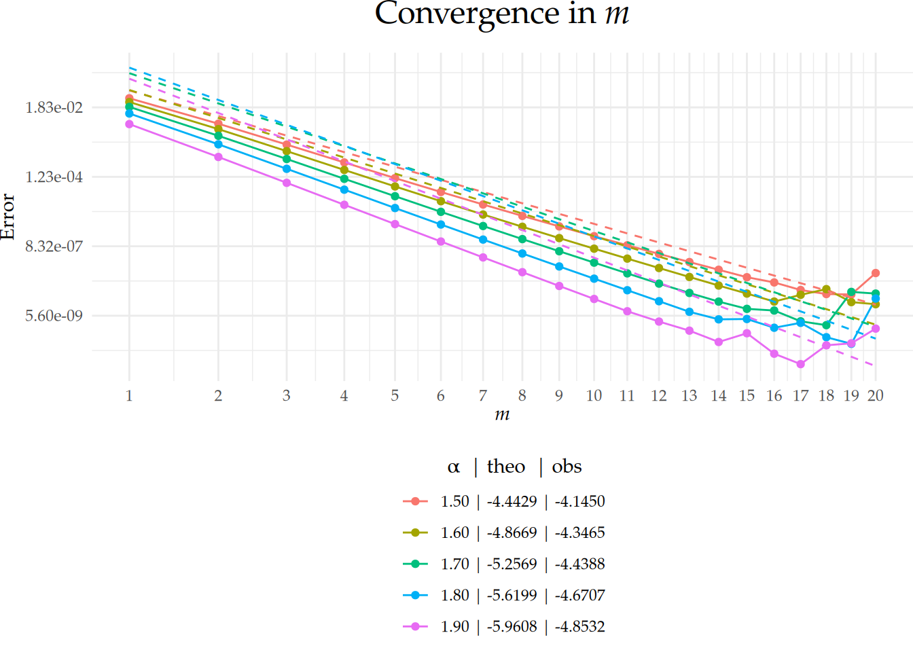

Go back to the Contents page.
Press Show to reveal the code chunks.
# Create a clipboard button on the rendeblack HTML page
source(here::here("clipboard.R")); clipboard
# Set seed for reproducibility
set.seed(1982)
# Set global options for all code chunks
knitr::opts_chunk$set(
# Disable messages printed by R code chunks
message = FALSE,
# Disable warnings printed by R code chunks
warning = FALSE,
# Show R code within code chunks in output
echo = TRUE,
# Include both R code and its results in output
include = TRUE,
# Evaluate R code chunks
eval = TRUE,
# Enable caching of R code chunks for faster rendering
cache = FALSE,
# Align figures in the center of the output
fig.align = "center",
# Enable retina display for high-resolution figures
retina = 2,
# Show errors in the output instead of stopping rendering
error = TRUE,
# Do not collapse code and output into a single block
collapse = FALSE
)
# Start the figure counter
fig_count <- 0
# Define the captioner function
captioner <- function(caption) {
fig_count <<- fig_count + 1
paste0("Figure ", fig_count, ": ", caption)
}
library(MetricGraph)
library(ggplot2)
library(reshape2)
library(dplyr)
library(viridis)
library(plotly)
library(patchwork)
library(ggmap)
library(slackr)
source("keys.R")
slackr_setup(token = token) # token comes from keys.R
## [1] "Successfully connected to Slack"
capture.output(
knitr::purl(here::here("functionality1.Rmd"), output = here::here("functionality1.R")),
file = here::here("old/purl_log.txt")
)
source(here::here("functionality1.R"))
create_data <- function(alpha, m){
res <- rSPDE:::interp_rational_coefficients(
order = m,
type_rational_approx = "brasil",
type_interp = "spline",
alpha = alpha)
partFraction <- function(x) {
term_matrix <- outer(x, res$p, "-") # matrix of (x - p[i])
term_values <- sweep(1 / term_matrix, 2, res$r, "*") # multiply columns by r[i]
return(rowSums(term_values) + res$k)
}
powerFun <- function(x){
return(x^(-(alpha-floor(alpha))))
}
delta <- 10^(-(5+m)/2)
#x <- seq(1, 1/delta, length.out = 1000)
x <- seq(1, min_reciprocal_delta, length.out = 1000)
pf <- partFraction(x)
po <- powerFun(x)
Linferror <- max(abs(pf - po))
df <- rbind(data.frame(x = x, val = pf, method = "partFraction", alpha = alpha, m = m, Linferror = Linferror),
data.frame(x = x, val = po, method = "powerFun", alpha = alpha, m = m, Linferror = Linferror))
return(df)
}
alpha <- c(0.3, 1.6, 2.9, 3.3)
m <- c(3,6,20)
delta_aux <- 10^(-(5+m)/2)
min_reciprocal_delta <- min(1/delta_aux)
min_m <- min(m)
df <- do.call(rbind, lapply(alpha, function(a) {
do.call(rbind, lapply(m, function(mm) {
create_data(a, mm)
}))
}))
df <- df |>
mutate(
m = {
m_vals <- sort(unique(m))
factor(
m,
levels = m_vals,
labels = sprintf("$m = %g$", m_vals))
},
alpha = {
alpha_vals <- sort(unique(alpha))
factor(
alpha,
levels = alpha_vals,
labels = sprintf("$\\alpha = %g$", alpha_vals)
)
},
method = factor(
method,
levels = c("partFraction", "powerFun"),
labels = c("$r(x) = k+\\sum_{i=1}^mr_i(x-p_i)^{-1}$", "$f(x) = x^{-\\{\\alpha\\}}$")
)
)
df_lab <- df |>
distinct(m, alpha, Linferror)
df_lab <- df |>
group_by(m, alpha) |>
summarise(
Linferror = first(Linferror),
x_mid = mean(range(x, na.rm = TRUE)),
y_mid = exp(mean(log(range(val, na.rm = TRUE)))), # because of log scale
.groups = "drop"
)
p_RAT1 <- ggplot(df, aes(x, val, color = method, linetype = method)) +
facet_grid(m ~ alpha) +
geom_line(linewidth = 1) +
scale_y_log10(n.breaks = 5) +
scale_x_continuous(n.breaks = 6) +
scale_colour_manual(name = "Method", values = c("$r(x) = k+\\sum_{i=1}^mr_i(x-p_i)^{-1}$" = "red", "$f(x) = x^{-\\{\\alpha\\}}$" = "blue")) +
scale_linetype_manual(name = "Method", values = c("$r(x) = k+\\sum_{i=1}^mr_i(x-p_i)^{-1}$" = "solid", "$f(x) = x^{-\\{\\alpha\\}}$" = "dashed")) +
theme_bw() +
theme(panel.spacing = unit(0.3, "cm"),
text = element_text(family = "Palatino"),
plot.title = element_text(hjust = 0.5, size = 16),
strip.text = element_text(size = 12),
axis.title = element_text(size = 14),
axis.text = element_text(size = 12),
legend.title = element_text(size = 14),
legend.text = element_text(size = 12)) +
labs(x = "$x$",
y = "$y$") +
theme(
legend.position = "bottom",
legend.direction = "horizontal",
legend.key.width = unit(2, "cm"),
legend.key.height = unit(0, "cm")
) +
geom_text(
data = df_lab,
aes(
x = x_mid,
y = y_mid,
label = sprintf("$\\|r-f\\|_{L_{\\infty}(1,1/\\delta_{%d})} = %.2e$", min_m, Linferror)
),
inherit.aes = FALSE,
parse = FALSE,
size = 4,
hjust = 0.5,
vjust = 0.5
)
myggsave(p_RAT1, width = 12, height = 6)
knitr::include_graphics(here::here("data_files/tikzpic/p_RAT1.pdf"))
alpha_vector <- 1 + seq(0.5, 0.9, by = 0.1)
m_vector <- c(1:20)
errors <- matrix(NA, nrow = length(m_vector), ncol = length(alpha_vector))
for (alpha in alpha_vector) {
for (m in m_vector) {
res <- rSPDE:::interp_rational_coefficients(
order = m,
type_rational_approx = "brasil",
type_interp = "spline",
alpha = alpha)
partFraction <- function(x) {
term_matrix <- outer(x, res$p, "-") # matrix of (x - p[i])
term_values <- sweep(1 / term_matrix, 2, res$r, "*") # multiply columns by r[i]
return(rowSums(term_values) + res$k)
}
powerFun <- function(x){
return(x^(-(alpha-floor(alpha))))
}
delta <- 10^(-(5+m)/2)
x <- seq(1, 1/delta, length.out = 10)
pf <- partFraction(x)
po <- powerFun(x)
Linferror <- max(abs(pf - po))
m_index <- which(m_vector == m)
alpha_index <- which(alpha_vector == alpha)
errors[m_index, alpha_index] <- Linferror
}
}
observed_rates <- rep(NA, length(alpha_vector))
for (u in 1:length(alpha_vector)) {
observed_rates[u] <- coef(lm(log(errors[, u]) ~ sqrt(m_vector)))[2]
}
theoretical_rates <- - 2 * pi * sqrt(alpha_vector - floor(alpha_vector))
p_m <- error.convergence.plotter(x_axis_vector = m_vector,
alpha_vector,
errors,
theoretical_rates,
observed_rates,
line_equation_fun = exp_line_equation,
fig_title = expression("Convergence in " * italic(m)),
x_axis_label = expression(italic(m)),
apply_sqrt = TRUE)
p_m

LS0tCnRpdGxlOiAiUmF0aW9uYWwgYXBwcm94aW1hdGlvbiIKZGF0ZTogIkxhc3QgbW9kaWZpZWQ6IGByIGZvcm1hdChTeXMudGltZSgpLCAnJWQtJW0tJVkuJylgIgpvdXRwdXQ6CiAgaHRtbF9kb2N1bWVudDoKICAgIG1hdGhqYXg6ICJodHRwczovL2Nkbi5qc2RlbGl2ci5uZXQvbnBtL21hdGhqYXhAMy9lczUvdGV4LW1tbC1jaHRtbC5qcyIKICAgIGhpZ2hsaWdodDogcHlnbWVudHMKICAgIHRoZW1lOiBmbGF0bHkKICAgIGNvZGVfZm9sZGluZzogaGlkZSAjIGNsYXNzLnNvdXJjZSA9ICJmb2xkLWhpZGUiIHRvIGhpZGUgY29kZSBhbmQgYWRkIGEgYnV0dG9uIHRvIHNob3cgaXQKICAgIGRmX3ByaW50OiBwYWdlZAogICAgdG9jOiB0cnVlCiAgICB0b2NfZmxvYXQ6CiAgICAgIGNvbGxhcHNlZDogdHJ1ZQogICAgICBzbW9vdGhfc2Nyb2xsOiB0cnVlCiAgICBudW1iZXJfc2VjdGlvbnM6IHRydWUKICAgIGZpZ19jYXB0aW9uOiB0cnVlCiAgICBjb2RlX2Rvd25sb2FkOiB0cnVlCiAgICBjc3M6IHZpc3VhbC5jc3MKYWx3YXlzX2FsbG93X2h0bWw6IHRydWUKYmlibGlvZ3JhcGh5OiAKICAtIHJlZmVyZW5jZXMuYmliCiAgLSBncmF0ZWZ1bC1yZWZzLmJpYgpoZWFkZXItaW5jbHVkZXM6CiAgLSBcbmV3Y29tbWFuZHtcYXJ9e1xtYXRoYmJ7Un19CiAgLSBcbmV3Y29tbWFuZHtcbGxhdn1bMV17XGxlZnRceyMxXHJpZ2h0XH19CiAgLSBcbmV3Y29tbWFuZHtccGFyZX1bMV17XGxlZnQoIzFccmlnaHQpfQogIC0gXG5ld2NvbW1hbmR7XE5jYWx9e1xtYXRoY2Fse059fQogIC0gXG5ld2NvbW1hbmR7XFZjYWx9e1xtYXRoY2Fse1Z9fQogIC0gXG5ld2NvbW1hbmR7XEVjYWx9e1xtYXRoY2Fse0V9fQogIC0gXG5ld2NvbW1hbmR7XFdjYWx9e1xtYXRoY2Fse1d9fQogIC0gXG5ld2NvbW1hbmR7XGFsbW9zdGV2ZXJ5d2hlcmV9e1xtYXRocm17YS5lLn1cO30KLS0tCgpHbyBiYWNrIHRvIHRoZSBbQ29udGVudHNdKGFib3V0Lmh0bWwpIHBhZ2UuCgo8ZGl2IHN0eWxlPSJjb2xvcjogIzJjM2U1MDsgdGV4dC1hbGlnbjogcmlnaHQ7Ij4KKioqKioqKiogIAo8c3Ryb25nPlByZXNzIFNob3cgdG8gcmV2ZWFsIHRoZSBjb2RlIGNodW5rcy48L3N0cm9uZz4gIAoKKioqKioqKioKPC9kaXY+CgoKYGBge3J9CiMgQ3JlYXRlIGEgY2xpcGJvYXJkIGJ1dHRvbiBvbiB0aGUgcmVuZGVibGFjayBIVE1MIHBhZ2UKc291cmNlKGhlcmU6OmhlcmUoImNsaXBib2FyZC5SIikpOyBjbGlwYm9hcmQKIyBTZXQgc2VlZCBmb3IgcmVwcm9kdWNpYmlsaXR5CnNldC5zZWVkKDE5ODIpIAojIFNldCBnbG9iYWwgb3B0aW9ucyBmb3IgYWxsIGNvZGUgY2h1bmtzCmtuaXRyOjpvcHRzX2NodW5rJHNldCgKICAjIERpc2FibGUgbWVzc2FnZXMgcHJpbnRlZCBieSBSIGNvZGUgY2h1bmtzCiAgbWVzc2FnZSA9IEZBTFNFLCAgICAKICAjIERpc2FibGUgd2FybmluZ3MgcHJpbnRlZCBieSBSIGNvZGUgY2h1bmtzCiAgd2FybmluZyA9IEZBTFNFLCAgICAKICAjIFNob3cgUiBjb2RlIHdpdGhpbiBjb2RlIGNodW5rcyBpbiBvdXRwdXQKICBlY2hvID0gVFJVRSwgICAgICAgIAogICMgSW5jbHVkZSBib3RoIFIgY29kZSBhbmQgaXRzIHJlc3VsdHMgaW4gb3V0cHV0CiAgaW5jbHVkZSA9IFRSVUUsICAgICAKICAjIEV2YWx1YXRlIFIgY29kZSBjaHVua3MKICBldmFsID0gVFJVRSwgICAgICAgCiAgIyBFbmFibGUgY2FjaGluZyBvZiBSIGNvZGUgY2h1bmtzIGZvciBmYXN0ZXIgcmVuZGVyaW5nCiAgY2FjaGUgPSBGQUxTRSwgICAgICAKICAjIEFsaWduIGZpZ3VyZXMgaW4gdGhlIGNlbnRlciBvZiB0aGUgb3V0cHV0CiAgZmlnLmFsaWduID0gImNlbnRlciIsCiAgIyBFbmFibGUgcmV0aW5hIGRpc3BsYXkgZm9yIGhpZ2gtcmVzb2x1dGlvbiBmaWd1cmVzCiAgcmV0aW5hID0gMiwKICAjIFNob3cgZXJyb3JzIGluIHRoZSBvdXRwdXQgaW5zdGVhZCBvZiBzdG9wcGluZyByZW5kZXJpbmcKICBlcnJvciA9IFRSVUUsCiAgIyBEbyBub3QgY29sbGFwc2UgY29kZSBhbmQgb3V0cHV0IGludG8gYSBzaW5nbGUgYmxvY2sKICBjb2xsYXBzZSA9IEZBTFNFCikKIyBTdGFydCB0aGUgZmlndXJlIGNvdW50ZXIKZmlnX2NvdW50IDwtIDAKIyBEZWZpbmUgdGhlIGNhcHRpb25lciBmdW5jdGlvbgpjYXB0aW9uZXIgPC0gZnVuY3Rpb24oY2FwdGlvbikgewogIGZpZ19jb3VudCA8PC0gZmlnX2NvdW50ICsgMQogIHBhc3RlMCgiRmlndXJlICIsIGZpZ19jb3VudCwgIjogIiwgY2FwdGlvbikKfQoKYGBgCgpgYGB7ciwgZXZhbCA9IFRSVUV9CmxpYnJhcnkoTWV0cmljR3JhcGgpCmxpYnJhcnkoZ2dwbG90MikKbGlicmFyeShyZXNoYXBlMikKbGlicmFyeShkcGx5cikKbGlicmFyeSh2aXJpZGlzKQpsaWJyYXJ5KHBsb3RseSkKbGlicmFyeShwYXRjaHdvcmspCmxpYnJhcnkoZ2dtYXApCgoKbGlicmFyeShzbGFja3IpCnNvdXJjZSgia2V5cy5SIikKc2xhY2tyX3NldHVwKHRva2VuID0gdG9rZW4pICMgdG9rZW4gY29tZXMgZnJvbSBrZXlzLlIKYGBgCgoKYGBge3J9CmNhcHR1cmUub3V0cHV0KAogIGtuaXRyOjpwdXJsKGhlcmU6OmhlcmUoImZ1bmN0aW9uYWxpdHkxLlJtZCIpLCBvdXRwdXQgPSBoZXJlOjpoZXJlKCJmdW5jdGlvbmFsaXR5MS5SIikpLAogIGZpbGUgPSBoZXJlOjpoZXJlKCJvbGQvcHVybF9sb2cudHh0IikKKQpzb3VyY2UoaGVyZTo6aGVyZSgiZnVuY3Rpb25hbGl0eTEuUiIpKQpgYGAKCmBgYHtyfQpjcmVhdGVfZGF0YSA8LSBmdW5jdGlvbihhbHBoYSwgbSl7CnJlcyA8LSByU1BERTo6OmludGVycF9yYXRpb25hbF9jb2VmZmljaWVudHMoCiAgb3JkZXIgPSBtLCAKICB0eXBlX3JhdGlvbmFsX2FwcHJveCA9ICJicmFzaWwiLCAKICB0eXBlX2ludGVycCA9ICJzcGxpbmUiLCAKICBhbHBoYSA9IGFscGhhKQoKcGFydEZyYWN0aW9uIDwtIGZ1bmN0aW9uKHgpIHsKICB0ZXJtX21hdHJpeCA8LSBvdXRlcih4LCByZXMkcCwgIi0iKSAjIG1hdHJpeCBvZiAoeCAtIHBbaV0pCiAgdGVybV92YWx1ZXMgPC0gc3dlZXAoMSAvIHRlcm1fbWF0cml4LCAyLCByZXMkciwgIioiKSAjIG11bHRpcGx5IGNvbHVtbnMgYnkgcltpXQogIHJldHVybihyb3dTdW1zKHRlcm1fdmFsdWVzKSArIHJlcyRrKQp9Cgpwb3dlckZ1biA8LSBmdW5jdGlvbih4KXsKICByZXR1cm4oeF4oLShhbHBoYS1mbG9vcihhbHBoYSkpKSkKfQoKZGVsdGEgPC0gMTBeKC0oNSttKS8yKQoKI3ggPC0gc2VxKDEsIDEvZGVsdGEsIGxlbmd0aC5vdXQgPSAxMDAwKQp4IDwtIHNlcSgxLCBtaW5fcmVjaXByb2NhbF9kZWx0YSwgbGVuZ3RoLm91dCA9IDEwMDApCnBmIDwtIHBhcnRGcmFjdGlvbih4KQpwbyA8LSBwb3dlckZ1bih4KQpMaW5mZXJyb3IgPC0gbWF4KGFicyhwZiAtIHBvKSkKZGYgPC0gcmJpbmQoZGF0YS5mcmFtZSh4ID0geCwgdmFsID0gcGYsIG1ldGhvZCA9ICJwYXJ0RnJhY3Rpb24iLCBhbHBoYSA9IGFscGhhLCBtID0gbSwgTGluZmVycm9yID0gTGluZmVycm9yKSwKICAgICAgICAgICAgZGF0YS5mcmFtZSh4ID0geCwgdmFsID0gIHBvLCBtZXRob2QgPSAicG93ZXJGdW4iLCBhbHBoYSA9IGFscGhhLCBtID0gbSwgTGluZmVycm9yID0gTGluZmVycm9yKSkKcmV0dXJuKGRmKQp9CgphbHBoYSA8LSBjKDAuMywgMS42LCAyLjksIDMuMykKbSA8LSBjKDMsNiwyMCkKZGVsdGFfYXV4IDwtIDEwXigtKDUrbSkvMikKbWluX3JlY2lwcm9jYWxfZGVsdGEgPC0gbWluKDEvZGVsdGFfYXV4KQptaW5fbSA8LSBtaW4obSkKCmRmIDwtIGRvLmNhbGwocmJpbmQsIGxhcHBseShhbHBoYSwgZnVuY3Rpb24oYSkgewogIGRvLmNhbGwocmJpbmQsIGxhcHBseShtLCBmdW5jdGlvbihtbSkgewogICAgY3JlYXRlX2RhdGEoYSwgbW0pCiAgfSkpCn0pKQoKCmRmIDwtIGRmIHw+CiAgbXV0YXRlKAogICAgbSA9IHsKICAgICAgbV92YWxzIDwtIHNvcnQodW5pcXVlKG0pKQogICAgICBmYWN0b3IoCiAgICAgICAgbSwKICAgICAgICBsZXZlbHMgPSBtX3ZhbHMsCiAgICAgICAgbGFiZWxzID0gc3ByaW50ZigiJG0gPSAlZyQiLCBtX3ZhbHMpKQogICAgICB9LAogICAgYWxwaGEgPSB7CiAgICAgIGFscGhhX3ZhbHMgPC0gc29ydCh1bmlxdWUoYWxwaGEpKQogICAgICBmYWN0b3IoCiAgICAgICAgYWxwaGEsCiAgICAgICAgbGV2ZWxzID0gYWxwaGFfdmFscywKICAgICAgICBsYWJlbHMgPSBzcHJpbnRmKCIkXFxhbHBoYSA9ICVnJCIsIGFscGhhX3ZhbHMpCiAgICAgICkKICAgIH0sCiAgICBtZXRob2QgPSBmYWN0b3IoCiAgICAgIG1ldGhvZCwKICAgICAgbGV2ZWxzID0gYygicGFydEZyYWN0aW9uIiwgInBvd2VyRnVuIiksCiAgICAgIGxhYmVscyA9IGMoIiRyKHgpID0gaytcXHN1bV97aT0xfV5tcl9pKHgtcF9pKV57LTF9JCIsICIkZih4KSA9IHheey1cXHtcXGFscGhhXFx9fSQiKQogICAgKQogICkKCmRmX2xhYiA8LSBkZiB8PgogIGRpc3RpbmN0KG0sIGFscGhhLCBMaW5mZXJyb3IpCgpkZl9sYWIgPC0gZGYgfD4KICBncm91cF9ieShtLCBhbHBoYSkgfD4KICBzdW1tYXJpc2UoCiAgICBMaW5mZXJyb3IgPSBmaXJzdChMaW5mZXJyb3IpLAogICAgeF9taWQgPSBtZWFuKHJhbmdlKHgsIG5hLnJtID0gVFJVRSkpLAogICAgeV9taWQgPSBleHAobWVhbihsb2cocmFuZ2UodmFsLCBuYS5ybSA9IFRSVUUpKSkpLCAgIyBiZWNhdXNlIG9mIGxvZyBzY2FsZQogICAgLmdyb3VwcyA9ICJkcm9wIgogICkKCnBfUkFUMSA8LSBnZ3Bsb3QoZGYsIGFlcyh4LCB2YWwsIGNvbG9yID0gbWV0aG9kLCBsaW5ldHlwZSA9IG1ldGhvZCkpICsgCiAgZmFjZXRfZ3JpZChtIH4gYWxwaGEpICsKICBnZW9tX2xpbmUobGluZXdpZHRoID0gMSkgKwogIHNjYWxlX3lfbG9nMTAobi5icmVha3MgPSA1KSArCiAgc2NhbGVfeF9jb250aW51b3VzKG4uYnJlYWtzID0gNikgKwogIHNjYWxlX2NvbG91cl9tYW51YWwobmFtZSA9ICJNZXRob2QiLCB2YWx1ZXMgPSBjKCIkcih4KSA9IGsrXFxzdW1fe2k9MX1ebXJfaSh4LXBfaSleey0xfSQiID0gInJlZCIsICIkZih4KSA9IHheey1cXHtcXGFscGhhXFx9fSQiID0gImJsdWUiKSkgKyAKICBzY2FsZV9saW5ldHlwZV9tYW51YWwobmFtZSA9ICJNZXRob2QiLCB2YWx1ZXMgPSBjKCIkcih4KSA9IGsrXFxzdW1fe2k9MX1ebXJfaSh4LXBfaSleey0xfSQiID0gInNvbGlkIiwgIiRmKHgpID0geF57LVxce1xcYWxwaGFcXH19JCIgPSAiZGFzaGVkIikpICsgCiAgdGhlbWVfYncoKSArCiAgdGhlbWUocGFuZWwuc3BhY2luZyA9IHVuaXQoMC4zLCAiY20iKSwgCiAgICAgICAgdGV4dCA9IGVsZW1lbnRfdGV4dChmYW1pbHkgPSAiUGFsYXRpbm8iKSwKICAgICAgICBwbG90LnRpdGxlID0gZWxlbWVudF90ZXh0KGhqdXN0ID0gMC41LCBzaXplID0gMTYpLAogICAgICAgIHN0cmlwLnRleHQgPSBlbGVtZW50X3RleHQoc2l6ZSA9IDEyKSwKICAgICAgICBheGlzLnRpdGxlID0gZWxlbWVudF90ZXh0KHNpemUgPSAxNCksCiAgICAgICAgYXhpcy50ZXh0ID0gZWxlbWVudF90ZXh0KHNpemUgPSAxMiksCiAgICAgICAgbGVnZW5kLnRpdGxlID0gZWxlbWVudF90ZXh0KHNpemUgPSAxNCksCiAgICAgICAgbGVnZW5kLnRleHQgPSBlbGVtZW50X3RleHQoc2l6ZSA9IDEyKSkgKwogIGxhYnMoeCA9ICIkeCQiLCAKICAgICAgIHkgPSAiJHkkIikgKyAKICB0aGVtZSgKICBsZWdlbmQucG9zaXRpb24gPSAiYm90dG9tIiwKICBsZWdlbmQuZGlyZWN0aW9uID0gImhvcml6b250YWwiLAogIGxlZ2VuZC5rZXkud2lkdGggID0gdW5pdCgyLCAiY20iKSwKICBsZWdlbmQua2V5LmhlaWdodCA9IHVuaXQoMCwgImNtIikKKSArCiBnZW9tX3RleHQoCiAgICBkYXRhID0gZGZfbGFiLAogICAgYWVzKAogICAgICB4ID0geF9taWQsCiAgICAgIHkgPSB5X21pZCwKICAgICAgbGFiZWwgPSBzcHJpbnRmKCIkXFx8ci1mXFx8X3tMX3tcXGluZnR5fSgxLDEvXFxkZWx0YV97JWR9KX0gPSAlLjJlJCIsIG1pbl9tLCBMaW5mZXJyb3IpCiAgICApLAogICAgaW5oZXJpdC5hZXMgPSBGQUxTRSwKICAgIHBhcnNlID0gRkFMU0UsCiAgICBzaXplID0gNCwKICAgIGhqdXN0ID0gMC41LAogICAgdmp1c3QgPSAwLjUKICApCgoKCgpteWdnc2F2ZShwX1JBVDEsIHdpZHRoID0gMTIsIGhlaWdodCA9IDYpCgpgYGAKCgoKYGBge3IsIGV2YWwgPSBUUlVFLCBvdXQud2lkdGg9IjEyMDBweCIsIG91dC5oZWlnaHQ9IjYwMHB4IiwgZmlnLmNhcCA9IGNhcHRpb25lcigiQ292YXJpYW5jZSBlcnJvciBmb3IgdGhlIGludGVydmFsIGdyYXBoLiIpfQprbml0cjo6aW5jbHVkZV9ncmFwaGljcyhoZXJlOjpoZXJlKCJkYXRhX2ZpbGVzL3Rpa3pwaWMvcF9SQVQxLnBkZiIpKQpgYGAKCgoKYGBge3J9CmFscGhhX3ZlY3RvciA8LSAxICsgc2VxKDAuNSwgMC45LCBieSA9IDAuMSkKbV92ZWN0b3IgPC0gYygxOjIwKQplcnJvcnMgPC0gbWF0cml4KE5BLCBucm93ID0gbGVuZ3RoKG1fdmVjdG9yKSwgbmNvbCA9IGxlbmd0aChhbHBoYV92ZWN0b3IpKQpmb3IgKGFscGhhIGluIGFscGhhX3ZlY3RvcikgewogIGZvciAobSBpbiBtX3ZlY3RvcikgewogICAgcmVzIDwtIHJTUERFOjo6aW50ZXJwX3JhdGlvbmFsX2NvZWZmaWNpZW50cygKICAgICAgb3JkZXIgPSBtLCAKICAgICAgdHlwZV9yYXRpb25hbF9hcHByb3ggPSAiYnJhc2lsIiwgCiAgICAgIHR5cGVfaW50ZXJwID0gInNwbGluZSIsIAogICAgICBhbHBoYSA9IGFscGhhKQogICAgCiAgICBwYXJ0RnJhY3Rpb24gPC0gZnVuY3Rpb24oeCkgewogICAgICB0ZXJtX21hdHJpeCA8LSBvdXRlcih4LCByZXMkcCwgIi0iKSAjIG1hdHJpeCBvZiAoeCAtIHBbaV0pCiAgICAgIHRlcm1fdmFsdWVzIDwtIHN3ZWVwKDEgLyB0ZXJtX21hdHJpeCwgMiwgcmVzJHIsICIqIikgIyBtdWx0aXBseSBjb2x1bW5zIGJ5IHJbaV0KICAgICAgcmV0dXJuKHJvd1N1bXModGVybV92YWx1ZXMpICsgcmVzJGspCiAgICB9CiAgICAKICAgIHBvd2VyRnVuIDwtIGZ1bmN0aW9uKHgpewogICAgICByZXR1cm4oeF4oLShhbHBoYS1mbG9vcihhbHBoYSkpKSkKICAgIH0KICAgIAogICAgZGVsdGEgPC0gMTBeKC0oNSttKS8yKQogICAgeCA8LSBzZXEoMSwgMS9kZWx0YSwgbGVuZ3RoLm91dCA9IDEwKQogICAgcGYgPC0gcGFydEZyYWN0aW9uKHgpCiAgICBwbyA8LSBwb3dlckZ1bih4KQogICAgTGluZmVycm9yIDwtIG1heChhYnMocGYgLSBwbykpCiAgICAKICAgIG1faW5kZXggPC0gd2hpY2gobV92ZWN0b3IgPT0gbSkKICAgIGFscGhhX2luZGV4IDwtIHdoaWNoKGFscGhhX3ZlY3RvciA9PSBhbHBoYSkKICAgIGVycm9yc1ttX2luZGV4LCBhbHBoYV9pbmRleF0gPC0gTGluZmVycm9yCiAgfQp9CgpvYnNlcnZlZF9yYXRlcyA8LSByZXAoTkEsIGxlbmd0aChhbHBoYV92ZWN0b3IpKQpmb3IgKHUgaW4gMTpsZW5ndGgoYWxwaGFfdmVjdG9yKSkgewogIG9ic2VydmVkX3JhdGVzW3VdIDwtIGNvZWYobG0obG9nKGVycm9yc1ssIHVdKSB+IHNxcnQobV92ZWN0b3IpKSlbMl0KfQoKdGhlb3JldGljYWxfcmF0ZXMgPC0gLSAyICogcGkgKiBzcXJ0KGFscGhhX3ZlY3RvciAtIGZsb29yKGFscGhhX3ZlY3RvcikpCgpwX20gPC0gZXJyb3IuY29udmVyZ2VuY2UucGxvdHRlcih4X2F4aXNfdmVjdG9yID0gbV92ZWN0b3IsIAogICAgICAgICAgICAgICAgICAgICAgICAgICAgICAgICBhbHBoYV92ZWN0b3IsIAogICAgICAgICAgICAgICAgICAgICAgICAgICAgICAgICBlcnJvcnMsIAogICAgICAgICAgICAgICAgICAgICAgICAgICAgICAgICB0aGVvcmV0aWNhbF9yYXRlcywgCiAgICAgICAgICAgICAgICAgICAgICAgICAgICAgICAgIG9ic2VydmVkX3JhdGVzLAogICAgICAgICAgICAgICAgICAgICAgICAgICAgICAgICBsaW5lX2VxdWF0aW9uX2Z1biA9IGV4cF9saW5lX2VxdWF0aW9uLAogICAgICAgICAgICAgICAgICAgICAgICAgICAgICAgICBmaWdfdGl0bGUgPSBleHByZXNzaW9uKCJDb252ZXJnZW5jZSBpbiAiICogaXRhbGljKG0pKSwKICAgICAgICAgICAgICAgICAgICAgICAgICAgICAgICAgeF9heGlzX2xhYmVsID0gZXhwcmVzc2lvbihpdGFsaWMobSkpLAogICAgICAgICAgICAgICAgICAgICAgICAgICAgICAgICBhcHBseV9zcXJ0ID0gVFJVRSkKcF9tCgpgYGAKCgoKCgoKCgoKCgoKCgoKCgoKCgoKCgoKCgoKCgoKCgoKCg==